Home › D · Active sensing: lidar
The last part of the lecture (slides 206–232) introduces active remote sensing: the lidar principle, how distance is measured, the lidar equation and what information is in the signal, followed by two exercises (detection range and water-vapour DIAL). The same Beer–Lambert law as in Part A governs the transmission. The mock exam only touches CALIOP (Q6c), so treat this part as likely extra exam material.
Principle: a laser, a telescope and a clock
A lidar (Light Detection And Ranging) emits a laser pulse and collects the fraction of light scattered back. Because the emitted light is well known, comparing emitted and received light gives the position, speed, polarising properties etc. of molecules and particles. It is the active counterpart of the passive radiometers of the other chapters.
| Passive radiometer | Lidar | |
|---|---|---|
| Source of light | Sun or Earth | own laser |
| Distance | not measured (integrated along the path) | measured directly (time of flight) |
| Coverage | wide swath, daily maps | one line (curtain from space) |
| Wavelengths | many (spectrum) | one or a few |
| Vertical resolution | coarse | high |
A target at 3 km returns the pulse after 20.0 µs (Python). A continuous laser gives a constant signal and cannot answer “where?”; a pulse is received at a delay t₀ that fixes R. A hard target blocks the pulse (strong signal then nothing but noise); the atmosphere is a semi-transparent diffuser: the pulse is attenuated but continues, so every delay gives a distance and a whole profile is recorded.
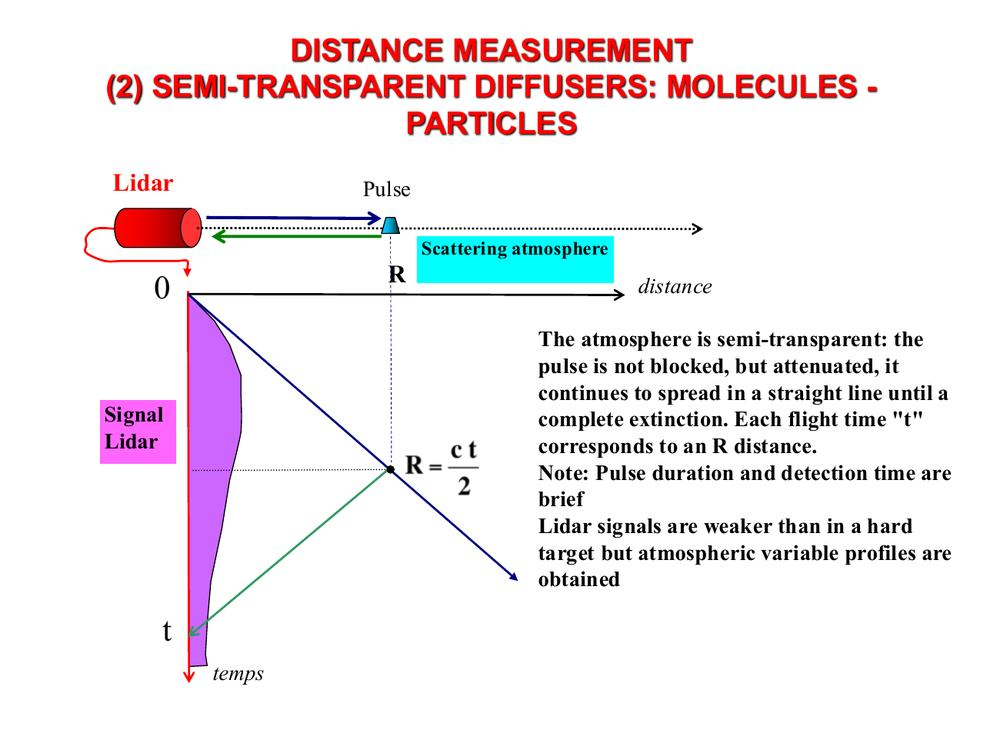
The lidar signal and the lidar equation
The signal rises at first because of the geometrical overlap between the laser beam and the telescope field of view, then declines slowly because of the distance of the scattering layers (1/z²) and the reduced transmission. Rapid variations reveal changes in scatterers; a radiometric background adds noise.
- P(z): power received from distance z (W). K: calibration constant (W m³ sr). β: total backscatter coefficient (m⁻¹ sr⁻¹) of particles and molecules, β = βm + βp. T: transmission between lidar and z, T = exp(−∫α dz) = e−τ.
- T² = two-way transmission (Beer–Lambert on the way out and back); 1/z² is the solid-angle factor.
Distance ambiguity: a pulse of duration τL blurs the range by ΔR = cτL/2 (4.5 m for 30 ns; illustrative value).
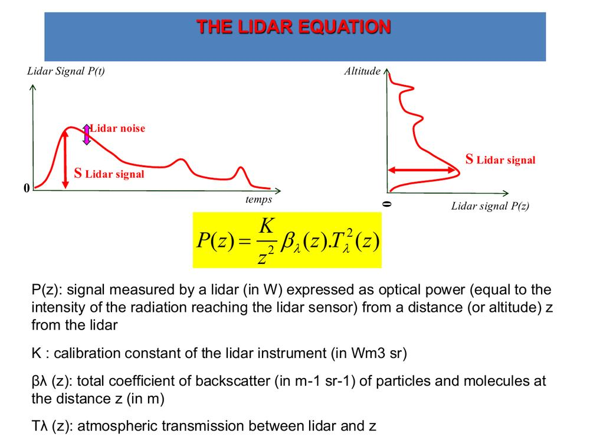
What is in the signal? The intensity gives the distance; the change of wavelength (Raman, Doppler), spectral width, degree of polarisation (depolarisation reveals non-spherical dust or ice) and coherence give structure, composition, pollutants and winds.
Exercise 1: detection range
Lidar with detection limit 1 nW, K = 10⁵ W m³ sr, βm = 10⁻⁶ m⁻¹ sr⁻¹; T(1 km) = 0.7, T(3 km) = 0.5, T(12 km) = 0.3.
| Target | z | βp (m⁻¹ sr⁻¹) | T | P (nW) | Detected? | Lecture |
|---|---|---|---|---|---|---|
| (a) particle layer | 1 km | 1×10⁻⁶ | 0.7 | 98.0 | yes | 98 nW |
| (b) water-droplet cloud | 3 km | 15×10⁻⁶ | 0.5 | 44.4 | yes | 44 nW |
| (c) sub-visible cirrus | 12 km | 0.2×10⁻⁶ | 0.3 | 0.075 | no | 0.08 nW |
| (d) 3 km cloud behind τ = 0.8 at 2 km | 3 km | 15×10⁻⁶ | 0.5·e−0.8 | 8.97 | yes | 8.6 nW |
| (d) cirrus behind τ = 0.8 | 12 km | 0.2×10⁻⁶ | 0.3·e−0.8 | 0.015 | no | — |
- β = βm + βp = 2×10⁻⁶ m⁻¹ sr⁻¹; z = 1000 m.
- P = 10⁵/(1000)² × 2×10⁻⁶ × 0.7² = 98 nW (> 1 nW).
Honest note. For (d) the cloud adds a two-way factor exp(−2×0.8) = 0.202; we find 8.97 nW for the 3 km cloud while the lecture solution prints 8.6 nW. The conclusion is identical (3 km detected; 12 km not), so we keep our recomputed number and flag the difference.

DIAL and exercise 2: water vapour
A differential-absorption lidar measures the extinction of water vapour from two close wavelengths: ON (on an absorption line, total extinction αH₂O + αp + αm) and OFF (αH₂O = 0). Applying the lidar equation to both and taking the double ratio between r₁ and r₂ cancels K, 1/z², and β (close wavelengths):
- Δr = 500 m; PON = 10, 7 nW; POFF = 10, 8 nW.
- ln[(10×7)/(10×8)] = −0.1335 → α = 0.1335/(2×500) = 1.335e-04 m⁻¹ (lecture 1.33×10⁻⁴).
- q = 5×10⁴ × α = 6.68 g/kg (lecture 6.68).
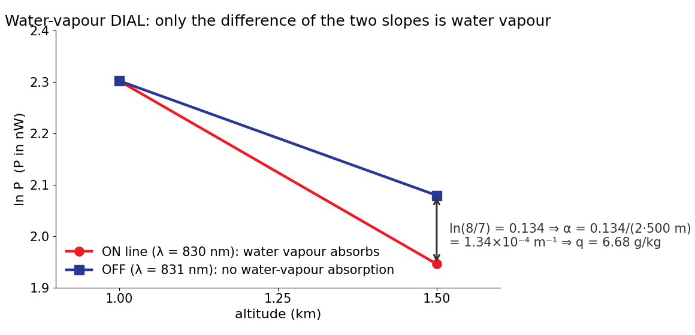
Applications seen in the lecture
- Boundary-layer diurnal cycle over Paris on a summer heat-wave day (ground lidar at 532 nm, Créteil).
- Saharan dust intrusion mixing with local aerosols; ice-crystal clouds above pollution particles.
- CALIOP (spaceborne lidar): attenuated backscatter transects, aerosol classification (level 2), lidar ratio; some biomass-burning aerosols misclassified as cloud.
- Dust deposition: African dust crossing the Atlantic fertilises the Amazon (phosphorus), estimated from CALIOP and a dynamical model.
- Topographic and forest-canopy lidar (airborne).
Worked example, quick Q&A and memory hooks
- Δr = 1.5 − 1 km = 500 m.
- Double ratio = (10 × 7)/(10 × 8) = 0.875; ln = −0.1335.
- α = 0.1335/(2 × 500 m) = 1.335e-04 m⁻¹.
- q = 5×10⁴ × α = 6.68 g/kg.
Quick Q&A
A: The delay of the pulse gives the distance; a continuous beam gives none.
A: The pulse goes to the scatterer and comes back.
A: Overlap of beam and telescope; then 1/z² and transmission.
A: The OFF wavelength removes particle and molecular effects; the difference is the gas.
Memory hooks
- A lidar is an echo-sounder for light: shout (pulse), wait (delay), the echo tells distance and what the wall is made of.Lidar là máy dò dội âm bằng ánh sáng.
- 1/z² is the flashlight rule: the farther the wall, the fainter your torch.Xa gấp đôi thì tín hiệu giảm 4 lần.
- DIAL is comparing two photos taken a moment apart: whatever is the same cancels; what remains is the target gas.DIAL: chụp hai ảnh gần nhau, phần giống nhau triệt tiêu.
Lecture slides for this module (Cuesta master course)
21 pages of the lecture “Remote Sensing of the Atmosphere: a focus on air composition” (J. Cuesta, UPEC). Page numbers refer to the lecture PDF. Click a page to enlarge; browse all pages.
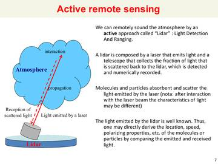
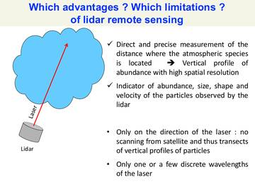
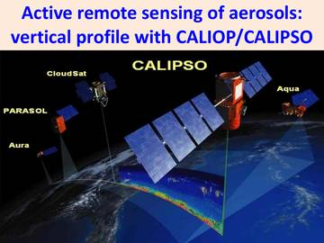
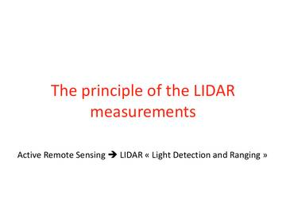
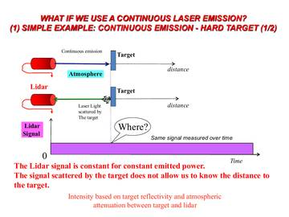
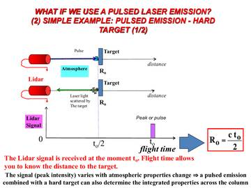

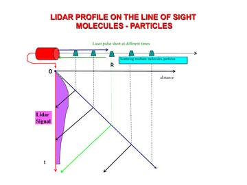


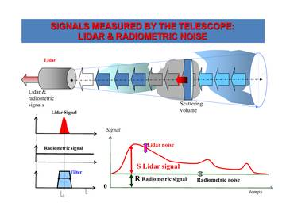


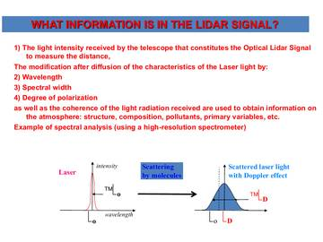
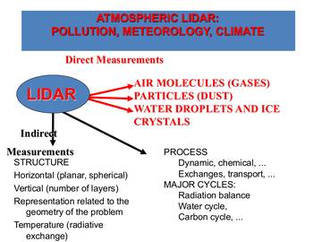
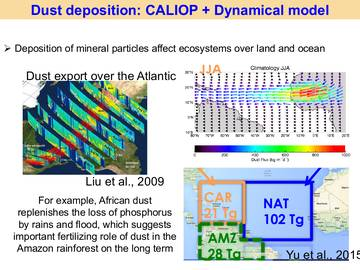
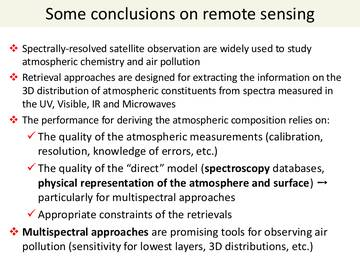
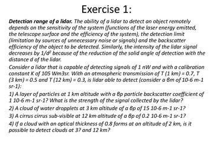
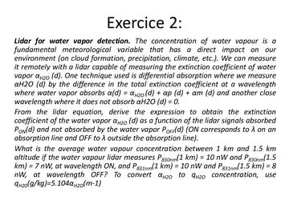
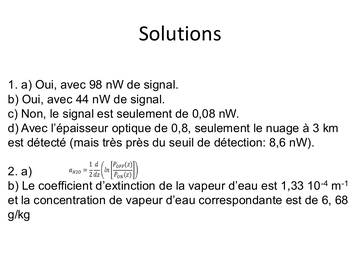
Exam checklist — points you must mention
- Lidar = laser + telescope; advantages (range, vertical profile, particle properties) and limits (one line of sight, few wavelengths).
- R = ct/2; pulsed emission; hard target versus semi-transparent diffusers; range ambiguity ΔR = cτ_L/2.
- Signal shape: overlap rise, then decline from 1/z² and transmission; peaks = layers; radiometric noise.
- Lidar equation P(z) = K/z²·β(z)·T²(z); β = β_m + β_p; T² is two-way.
- Exercise 1: 98, 44, 0.08 nW and the effect of a τ = 0.8 cloud.
- DIAL: α = (1/2Δr) ln[P_OFF(r₁)P_ON(r₂)/(P_ON(r₁)P_OFF(r₂))]; q = 5×10⁴ α ⇒ 6.68 g/kg.
- Lidar phát xung laser và thu ánh sáng tán xạ ngược; thời gian bay cho khoảng cách R = ct/2.
- Phương trình lidar: P(z) = K/z² · β(z) · T²(z); T bình phương vì xung đi và về.
- Bài tập 1: 98 nW (lớp hạt 1 km), 44 nW (mây 3 km), 0,08 nW (cirrus 12 km: không thấy); mây τ = 0,8 ở 2 km vẫn cho thấy mây 3 km (≈ 9 nW) nhưng không thấy cirrus.
- DIAL: dùng tỉ số kép của tín hiệu ON/OFF để khử K, 1/z², β; α = 1,33×10⁻⁴ m⁻¹, q ≈ 6,68 g/kg.
Practice calculations
These tools run in your browser and are checked against Python:
Lidar equation: can it detect? Water-vapour DIAL Optical depth and transmission
Lecture slides (14 slides; use ← → keys or the buttons)
Quick self-check (10 of 18 questions)
Open the full bank: 18 multiple-choice + 3 essay questions →